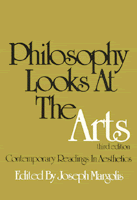

This revised and expanded edition helps define the structure of current aesthetics
This revised and expanded edition helps define the structure of current aesthetics


 This revised and expanded edition helps define the structure of current aesthetics
This revised and expanded edition helps define the structure of current aesthetics

|  |
Philosophy Looks at the ArtsContemporary Readings in AestheticsThird Editionedited by Joseph Margolispaper EAN: 978-0-87722-440-2 (ISBN: 0-87722-440-4) |
"...the best anthology in the current literature, edited by one of the leaders in the field."
—Educational Book Review
The first edition of this widely used anthology offered a needed introduction to a new analytic aesthetics which has in the intervening years become even more influential. This new, revised and expanded edition has been designed by one of the leaders of the field to help define the structure of current aesthetics. Of the 24 articles included more than half are new to this edition.
The new edition emphasizes opposing currents in aesthetics with contributions from the most active and influential writers in the field. It is a basic book for any library and is designed to provide both undergraduate and graduate students with a professional orientation in aesthetics.
Excerpt available at www.temple.edu/tempress
Preface
Part I: The Nature of Aesthetic Interests
1. The Aesthetic Point of View – Monroe C . Beardsley
2. Piece: Contra Aesthetics – Timothy Binkley
3. Aesthetic Theory and the Experience of Art – R. K . Elliott
Bibliography
Part II: Aesthetic Qualities
4. Aesthetic Concepts – F . N. Sibley
5. Categories of Art – Kendall L . Walton
Bibliography
Part III: The Definition of Art
6. The Role of Theory in Aesthetics – Morris Weitz
7 . The Artworld – Arthur Danto
8 . Creativity in the Arts – Jack Glickman
Bibliography
Part IV: The Ontology of Art
9. Art and Its Objects – Richard Wollheim
10. Toward an Ontology of Art Works – Nicholas Wolterstorff
11. The Ontological Peculiarity of Works of Art – Joseph Margolis
Bibliography
Part V: Representation in Art
12. Reality Remade – Nelson Goodman
13. On Drawing an Object – Richard Wollheim
14. Depiction, Vision, and Convention – Patrick Maynard
Bibliography
Part VI: The Intentional Fallacy and Expressive Qualities
15. The Intentional Fallacy – W. K. Wimsatt and Monroe C. Beardsley
16. Intention and Interpretation in Criticism – Frank Cioffi
17. Expressive Properties of Art – Guy Sircello
18. Art and Expression: A Critique – Alan Tormey
Bibliography
Part VII: The Objectivity of Criticism
19. The Testability of an Interpretation – Monroe C. Beardsley
20. Robust Relativism – Joseph Margolis
21. Critical Communication – Arnold Isenberg
Bibliography
Part VIII: Fiction and Metaphor
22. The Language of Fiction – Margaret Macdonald
23. Possible but Unactual Objects: On What There Isn't – Alvin Plantinga
24. Metaphor – Max Black
Bibliography
Notes on the Contributors
Index
Joseph Margolis is Professor of Philosophy at Temple University. He is the author or editor of twelve other books as well as numerous articles.
© 2015 Temple University. All Rights Reserved. This page: http://www.temple.edu/tempress/titles/146_reg.html.